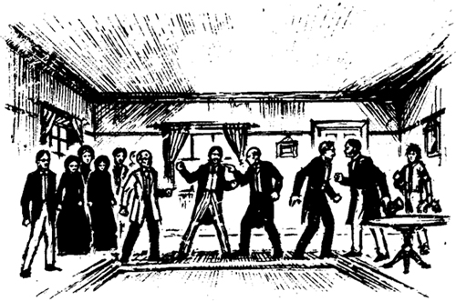
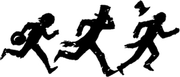
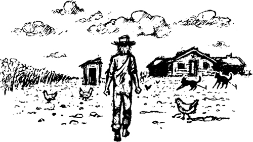

9

Thêm anh em!
Chẳng bao lâu sau lại xảy ra một vấn đề khác. Hai người đàn ông đến nhà vào chiều hôm đó. Một trong số họ khoảng sáu mươi tuổi. Người đàn ông còn lại thì trẻ hơn.
Người đàn ông lớn tuổi buồn rầu nói: “Chúng tôi đến đây từ Anh quốc. Tôi là Harvey Wilks, và đây là em trai tôi William. Nó không nói được cũng không nghe được. Nó bị câm điếc. Tôi đã nhận được thư của Peter. Chúng tôi lên đường ngay lập tức. Em trai tôi đã chết phải không?”
Ba cô gái tức giận với những người đàn ông này. Bạn bè và hàng xóm của Peter Wilks cũng tức giận nốt.
Một trong những người hàng xóm nói: “Các người là kẻ lừa đảo chuyên nghiệp. Anh em của Peter đã ở đây!” Cô ta chỉ vào Nhà vua và Công tước.
Hai người đàn ông nhìn Nhà vua và Công tước.
Người đàn ông lớn tuổi nói: “Không! Chúng tôi mới là anh em của Peter. Những người đàn ông này là kẻ lừa đảo chuyên nghiệp.”
Ngay lập tức, hai người đàn ông Harvey Wilks bắt đầu to tiếng cãi nhau.
Ba cô gái và hầu hết bạn bè và hàng xóm của Peter đều tin Nhà vua. Nhưng một số người lại tin người đàn ông kia. Rồi có người nhớ ra ông bác sĩ. Ông bác sĩ đã không tin Nhà vua. Ông bác sĩ là một người thông minh. Những người hàng xóm muốn ông nói chuyện với người Harvey Wilks thứ hai.
Có người chạy đến nhà ông bác sĩ. Họ đưa ông ấy trở lại phòng khách của Peter.
Ông bác sĩ lắng nghe lời kể của người Harvey Wilks thứ hai. Nhưng ông không tin câu chuyện của người đàn ông đó. Ông không tin ông ta, và ông cũng không tin Nhà vua!
Ông nói: “Tất cả các người đều là kẻ lừa đảo chuyên nghiệp!”

Chẳng mấy chốc, mọi người lại bắt đầu la hét với nhau. Tất cả mọi người đều tức giận.
Ông bác sĩ hét lên: “Im đi! Tôi có một câu hỏi cho hai người đàn ông này.” Ông chỉ vào Nhà vua và người Harvey Wilks kia.
Ông bác sĩ nói: “Tôi biết Peter rất rõ. Tôi là bác sĩ của nó nhiều năm. Có một vết bớt màu nâu trên cơ thể Peter. Nó sinh ra đã có vết bớt đó. Vết bớt đó theo nó suốt cuộc đời. Cả hai người đàn ông này đều nói rằng, “Peter là anh em của tôi”. Anh em của Peter hẳn phải biết về vết bớt đó!”
Ông hỏi hai người Harvey Wilks: “Vết bớt trên cơ thể Peter nằm ở đâu?”
Nhà vua nói: “Vết bớt nằm trên chân trái của nó.”
Người đàn ông kia nói: “Không! Nó nằm trên cánh tay phải của nó.”
Ông bác sĩ nói: “Cả hai người đều sai!”
Chẳng mấy chốc, mọi người lại bắt đầu la hét. Và chẳng mấy chốc, một trong những người bạn của Peter nghĩ ra một ý.
Ông ta nói: “Chúng ta sẽ đến nghĩa trang ngay bây giờ và đào quan tài lên. Chúng ta sẽ xem xét cơ thể của Peter. Chúng ta sẽ tìm vết bớt màu nâu trên chân hoặc cánh tay của nó!”
Vài phút sau, chúng tôi lại đứng xung quanh ngôi mộ.
Nhà vua thì thầm với Công tước và tôi: “Sắp có chuyện chẳng lành đây. Chúng ta phải chạy thôi!”
Chẳng mấy chốc, một đám đông lớn tụ tập xung quanh ngôi mộ. Tất cả mọi người trong thị trấn đều đã nghe câu chuyện về anh em của Peter Wilks. Những người hàng xóm đã đào quan tài lên khỏi mộ. Họ đang tháo những chiếc vít trên nắp quan tài. Nhà vua, Công tước và tôi lặng lẽ di chuyển đến rìa đám đông.
Rồi, có người tìm thấy túi tiền trong quan tài của Peter. Và Nhà vua, Công tước và tôi bắt đầu chạy.

Vài phút sau, chúng tôi nhảy lên bè và đẩy ra giữa dòng chảy. Chúng tôi đi suốt đêm và cả ngày hôm sau.
Hai ngày sau, chúng tôi dừng lại ở một thị trấn khác. Đó là một thị trấn nhỏ trên bờ biển phía tây. Chúng tôi đang ở tiểu bang Arkansas. Và Nhà vua đã làm một điều kinh khủng ở đó. Ông ta bán Jim!
Sáng hôm đó, Công tước và tôi vào thị trấn. Công tước muốn tìm một phòng họp. Nhà vua không đi cùng chúng tôi.
Ông ta nói: “Chúng ta đã mất 6000 đô la ở nhà Peter Wilks. Chúng ta cần thêm tiền. Chúng ta sẽ tổ chức thêm một “Buổi biểu diễn hấp dẫn dành cho nam giới trên hai mươi mốt tuổi” ở đây tối nay.” Ông ta cười.
Chúng tôi tìm thấy một phòng họp và Công tước trả tiền cho chủ phòng họp. Sau đó, ông ta rời tôi đi. Ông ta định đi tìm Nhà vua.
Tôi từ từ đi bộ trở lại bè. Mọi thứ rất yên tĩnh. Tại sao vậy? Tôi nhảy lên bè và nhìn vào cái chòi nhỏ. Không thấy Jim đâu. Và thông báo truy nã cũng không còn trên bè nữa!
Tôi nghĩ: “Ôi, không! Có ai đó đã bắt Jim mất rồi.”
Tôi nhanh chóng di chuyển bè đến một địa điểm khác, cách đó một dặm. Sau đó, tôi quay lại thị trấn. Chẳng mấy chốc, tôi tìm thấy Công tước và kể cho ông ta nghe về Jim.
Công tước nói: “Tôi biết chuyện về Jim rồi. Sáng nay, Nhà vua đã bán nó. Ông ta bán nó cho một người nông dân. Tên người nông dân đó là Phelps. Trang trại của ông ta cách đây năm dặm.”
Công tước nói: “Nhà vua đã cho ông Phelps xem thông báo truy nã. Nhà vua nói, “Tôi không muốn đi đến New Orleans với tên nô lệ bỏ trốn này. Tôi phải đến St Louis. Ông hãy đưa cho tôi 50 đô la cho tên nô lệ bỏ trốn này. Sau đó, hãy đưa nó đến chỗ chủ của nó. Ông sẽ nhận được phần thưởng là 200 đô la.” Ông Phelps đồng ý với kế hoạch này. Ông ta đã đưa Jim về trang trại của mình. Ngày mai, ông ta sẽ đưa Jim xuống sông để đến New Orleans.”
Tôi buồn bã đi ra ngoài. Tôi không nói với Công tước biết bè ở đâu. Tôi không muốn gặp lại ông ta nữa. Chẳng mấy chốc, tôi đã đứng nói chuyện với chủ cửa hàng của thị trấn. Tôi hỏi ông ta về đường đi đến trang trại của ông Phelps. Sau đó, tôi kể cho ông ta nghe về Nhà vua và Công tước. Tôi kể cho ông ta nghe về “Buổi biểu diễn hấp dẫn dành cho nam giới trên hai mươi mốt tuổi”.
Nửa giờ sau, tôi đi ra khỏi thị trấn, hướng về trang trại của ông Phelps. Đằng sau tôi, tôi nghe thấy rất nhiều người tức giận đang la hét. Tôi cười.
Tôi đến trang trại của ông Phelps sau hai giờ. Tôi không thấy ai ở gần trang trại. Nhưng tôi có thấy một cái chòi gỗ có ổ khóa chắc chắn trên cửa.

Nội dung
- Tiêu đề
- Nội dung
- Ghi chú về tác giả
- Ghi chú về câu chuyện này
- Các nhân vật trong câu chuyện này
- 1. Nhà văn không biết hết mọi thứ!
- 2. Ngôi nhà gỗ trong rừng
- 3. Hai đứa trẻ bỏ nhà đi
- 4. Trên bè
- 5. Quyết định
- 6. Vua và Công tước
- 7. Những kẻ lừa đảo tự tin
- 8. Chiếc quan tài
- 9. Thêm anh em nữa!
- 10. Tom Sawyer
- Bản quyền